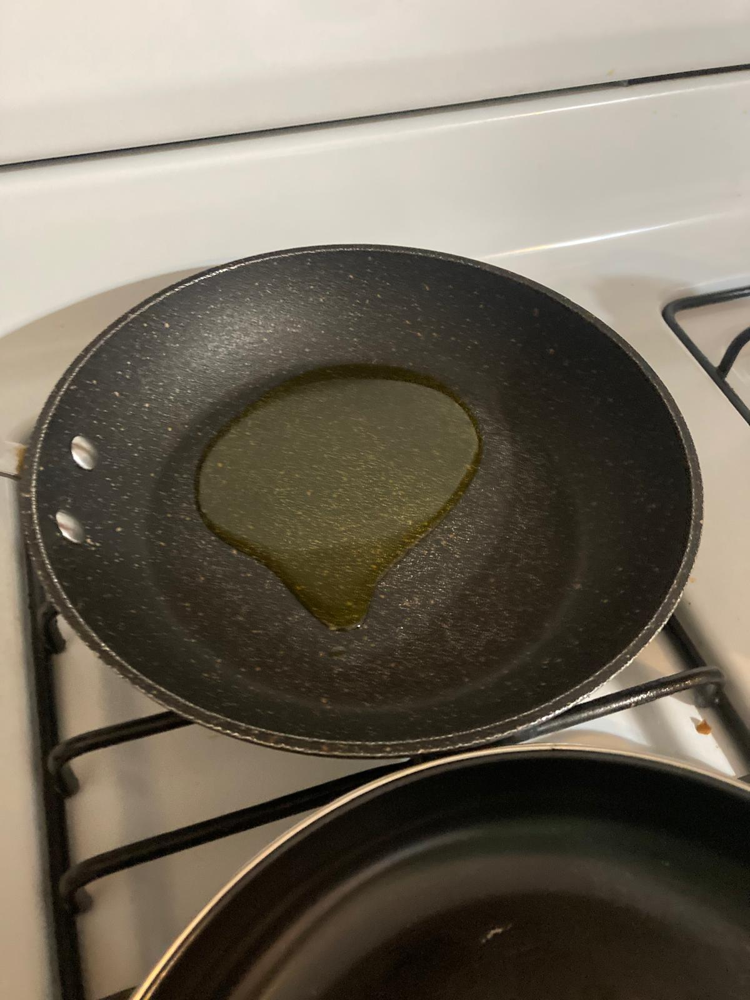
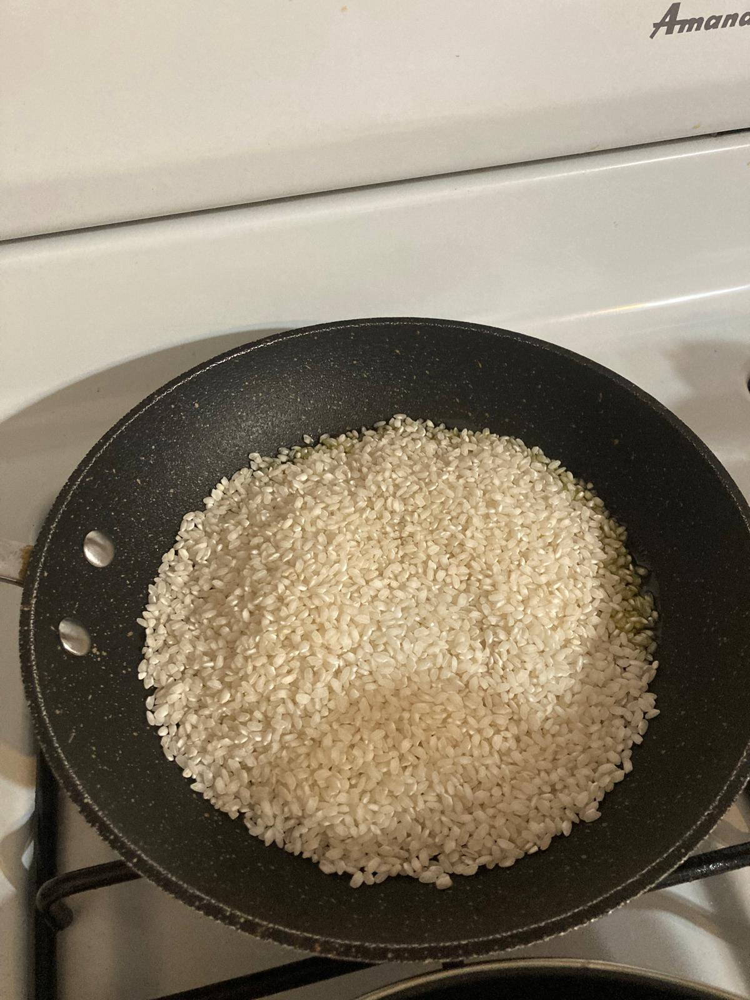
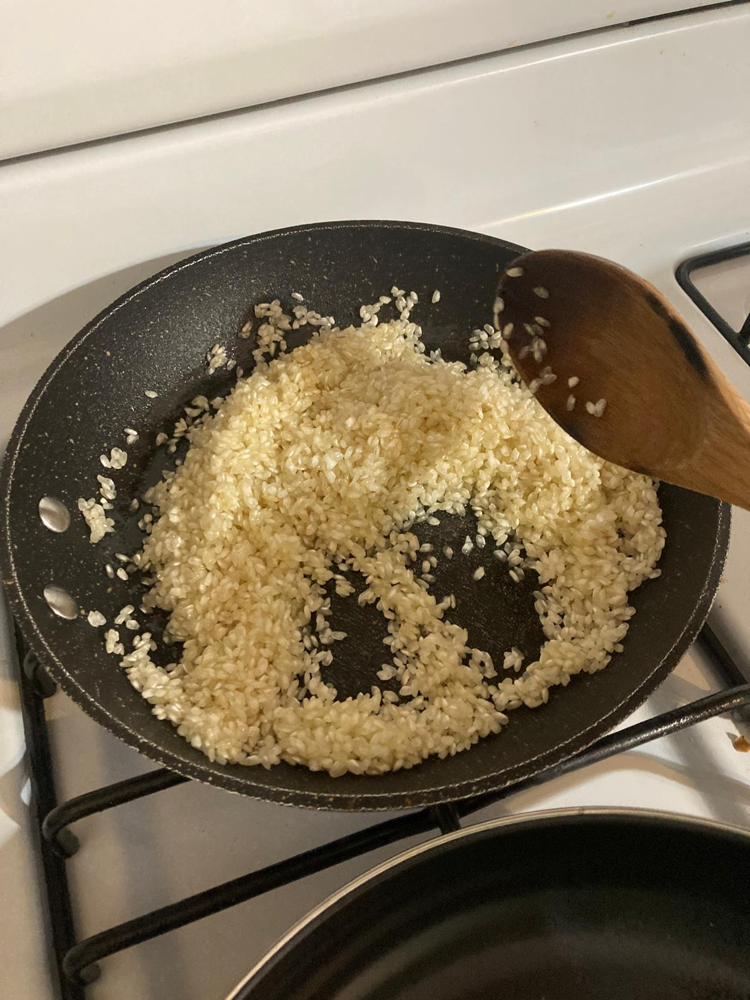
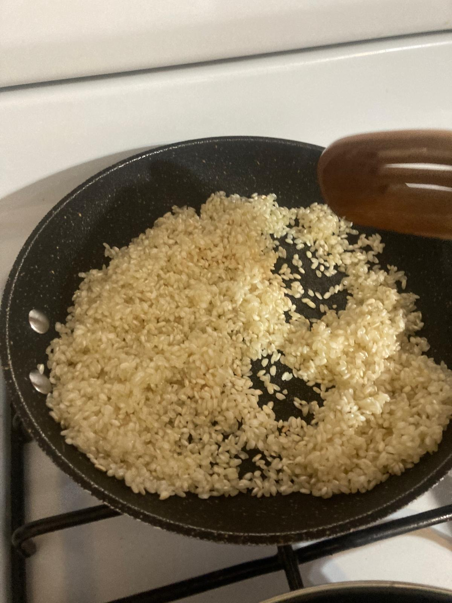
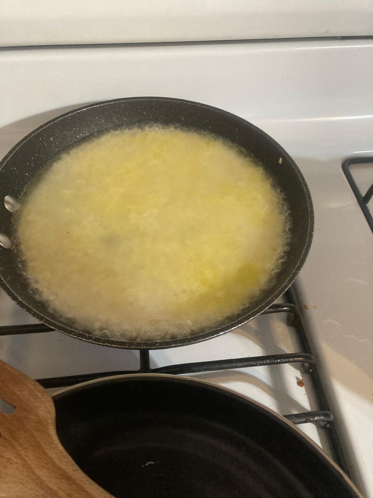
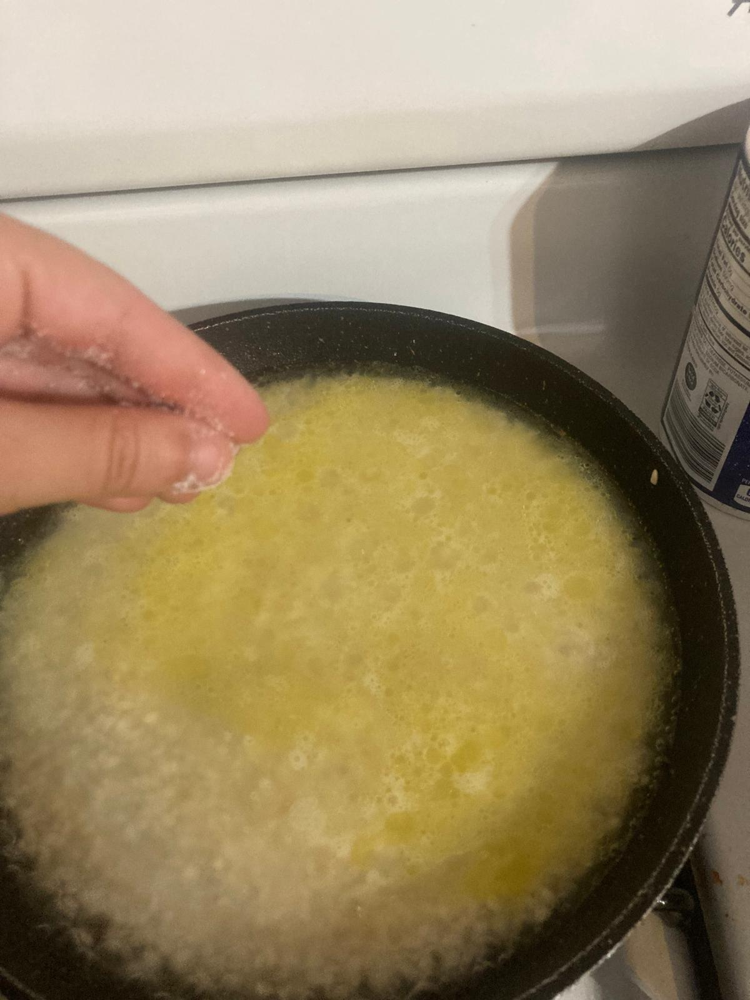
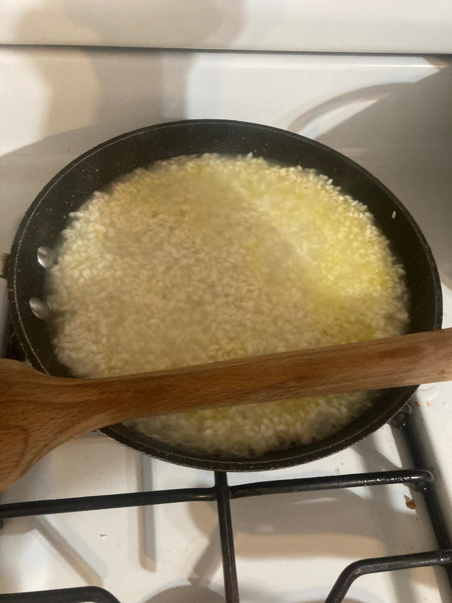
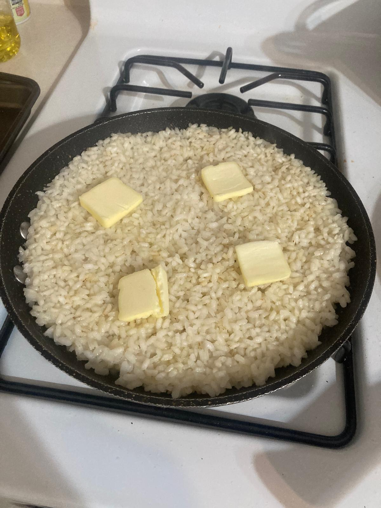
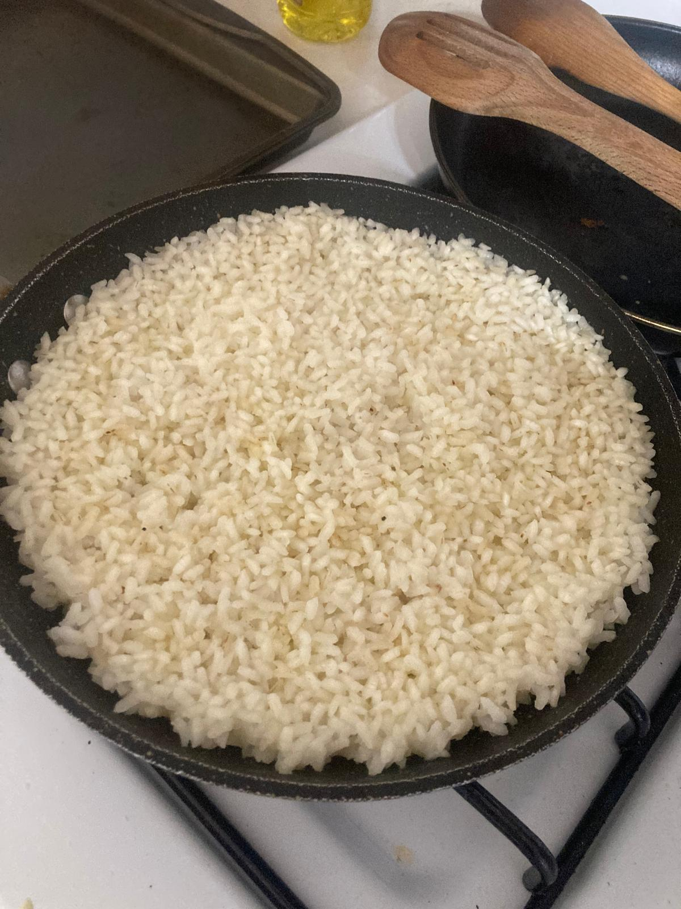

- Ponemos el aceite en la sartén a fuego medio. Metemos el arroz y lo dejamos en el aceite unos 3-5 minutos, sin que se tueste.
- Echamos 2,5 cazos de agua por cada cazo de arroz y echamos sal. Vigilamos mientras se cocina y vamos probando, es posible que necesitemos más agua.
- Cuando el agua esté casi totalmente absorbida y el arroz a buen punto, ponemos la mantequilla por encima.
- Listo para comer. Este arroz es perfecto para acompañar platos con salsa o simplemente comer a la cubana o con tomate frito.








